Tes films et séries, sans prise de tête.
Tu demandes un titre, ArrMada le trouve, le télécharge, le range et l'affiche sur ta TV. L'installation est guidée de bout en bout : pas besoin d'être informaticien.
Synology · Unraid · PC Windows · Mac · serveur Linux
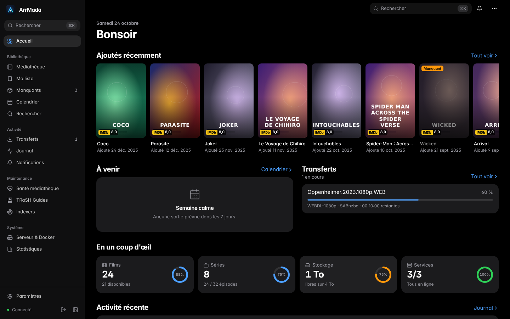
Ce qu'ArrMada fait à ta place
D'habitude, il faut installer six ou sept logiciels, recopier des clés entre eux et jongler entre les onglets.
| Avant | Avec ArrMada |
|---|---|
| 7 logiciels à installer un par un | Une seule installation, adaptée à ta machine |
| Des clés API à recopier partout | « Tout connecter » relie les applis en un clic |
| Des réglages oubliés | Une liste « Ce qu'il te reste à faire », vérifiée en direct |
| 7 onglets ouverts | Une appli sur ordinateur, téléphone, tablette et TV |
| Des menus pour du matériel qu'on n'a pas | Tu dis ce que tu as, le reste disparaît |
Installé en trois temps
Compte une vingtaine de minutes, téléchargements compris.
Le guide
Tu choisis ton appareil et tu suis les étapes, avec des cases à cocher et des boutons « Copier ». Sur Synology, aucune ligne de commande.
L'assistant
Dans ArrMada : ton mot de passe, puis « Tout connecter ». Chaque branchement est testé avant d'être enregistré.
Ce qui reste
Ajouter tes sources, ton fournisseur Usenet… ArrMada vérifie chaque point dans l'appli concernée et te dit où cliquer.
L'assistant
Chaque étape dit quoi faire, pourquoi, et quoi faire si ça ne marche pas.
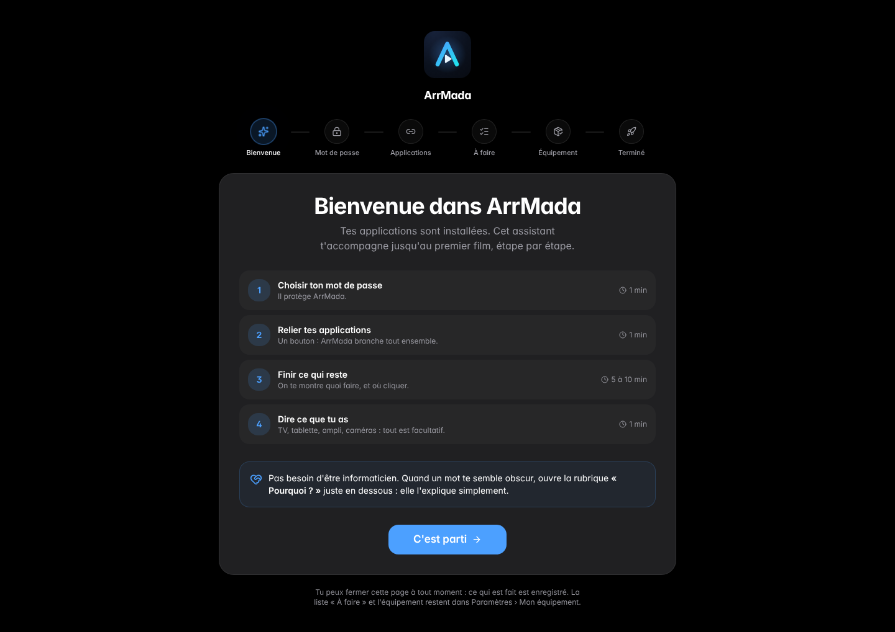
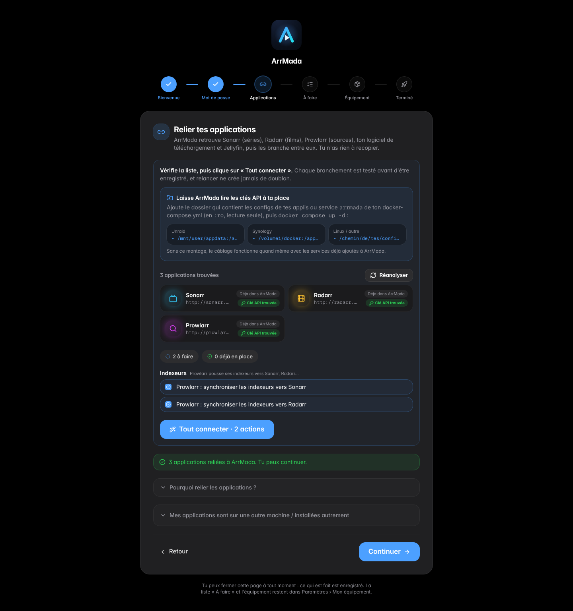
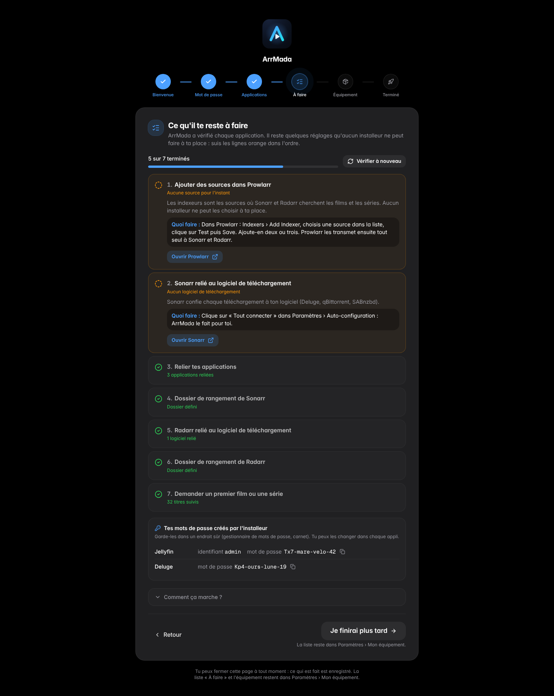
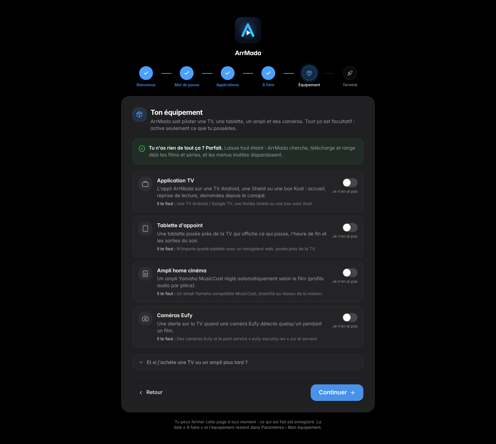
L'appli web
Sur ordinateur comme sur téléphone.
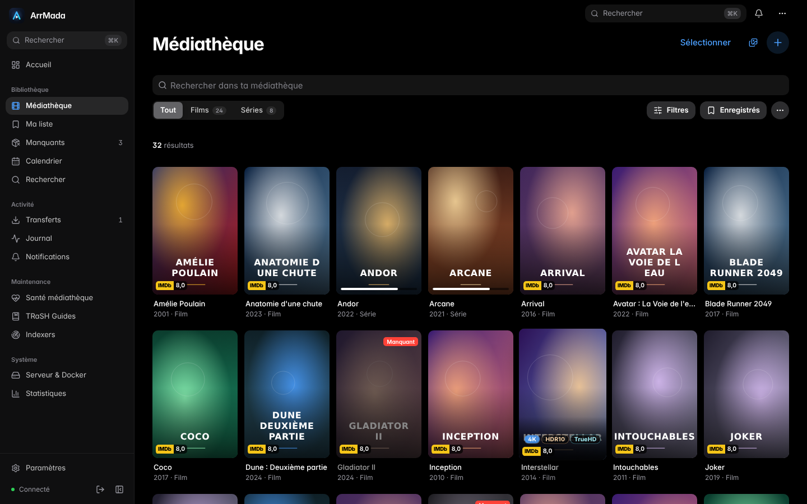
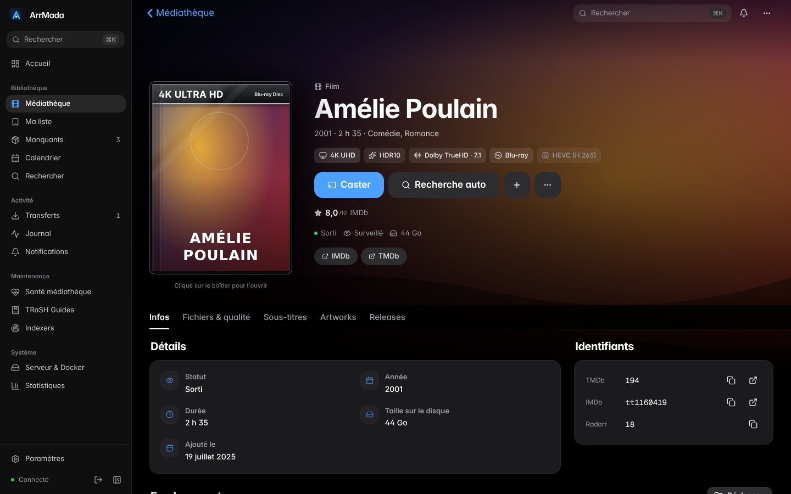
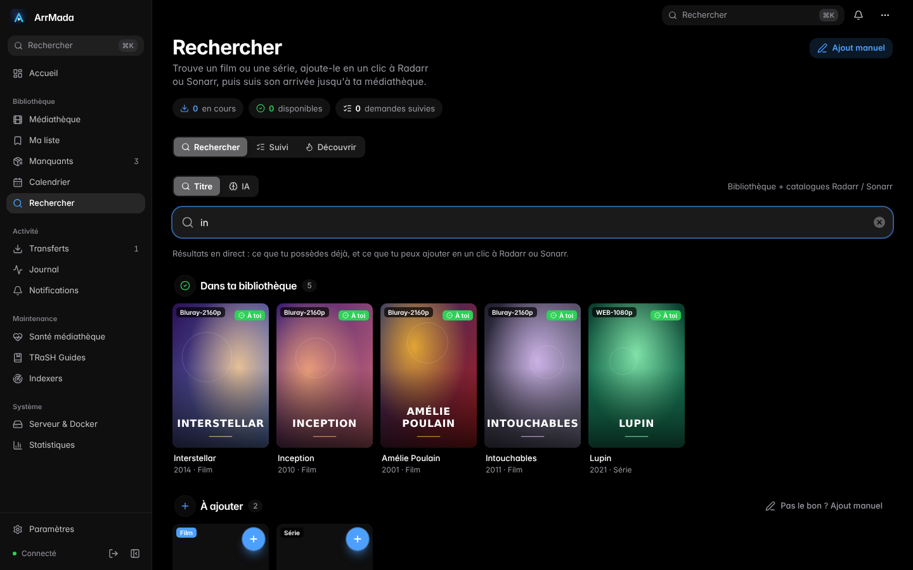
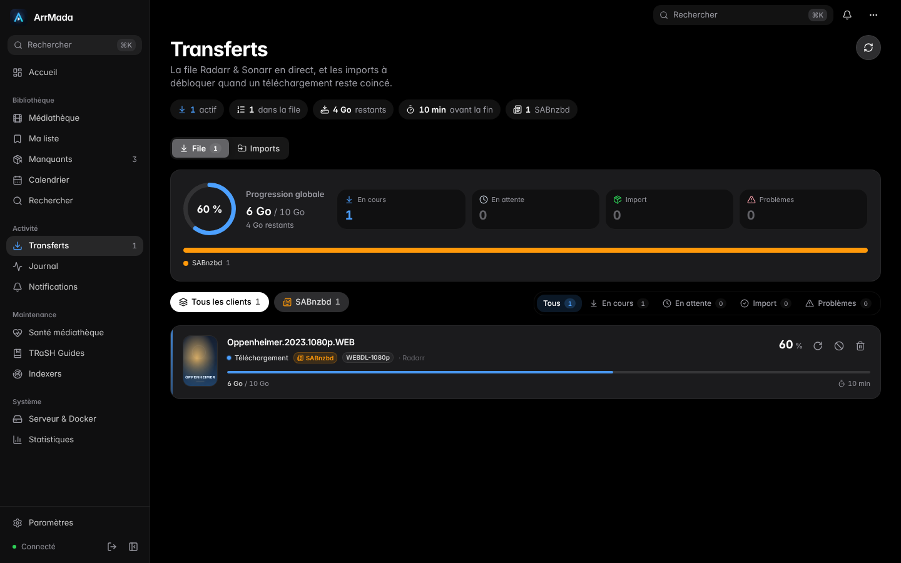
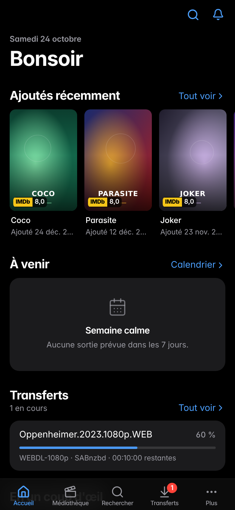
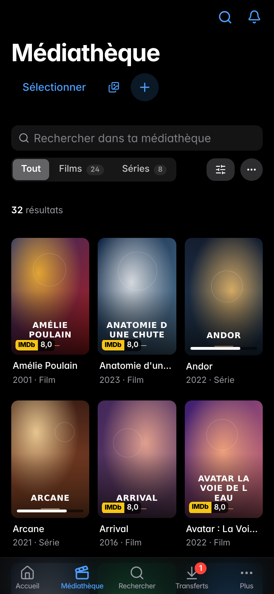
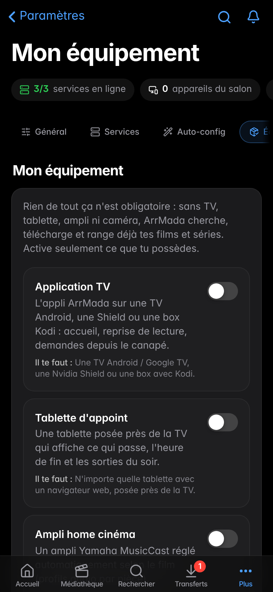

La tablette près de la TV
Pendant un film : l'heure de fin, les pistes, l'ampli. Le reste du temps : quoi regarder ce soir.
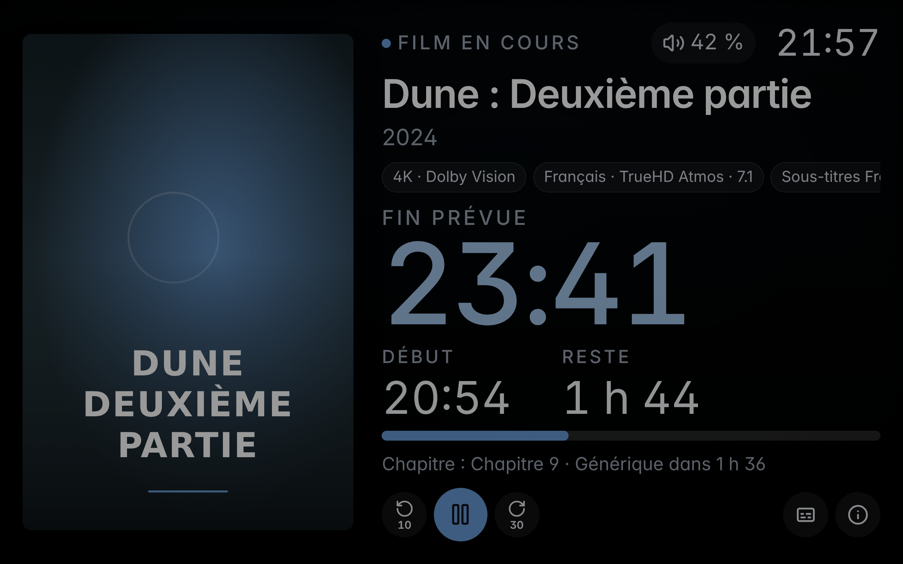
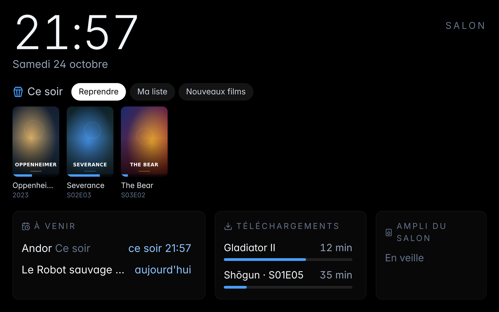
L'appli TV
Une appli native pour Android TV, Google TV et Nvidia Shield (ou un add-on Kodi), avec la reprise de lecture partagée.


Prêt ?
Le guide te pose deux questions et te donne les étapes exactes pour ton appareil.